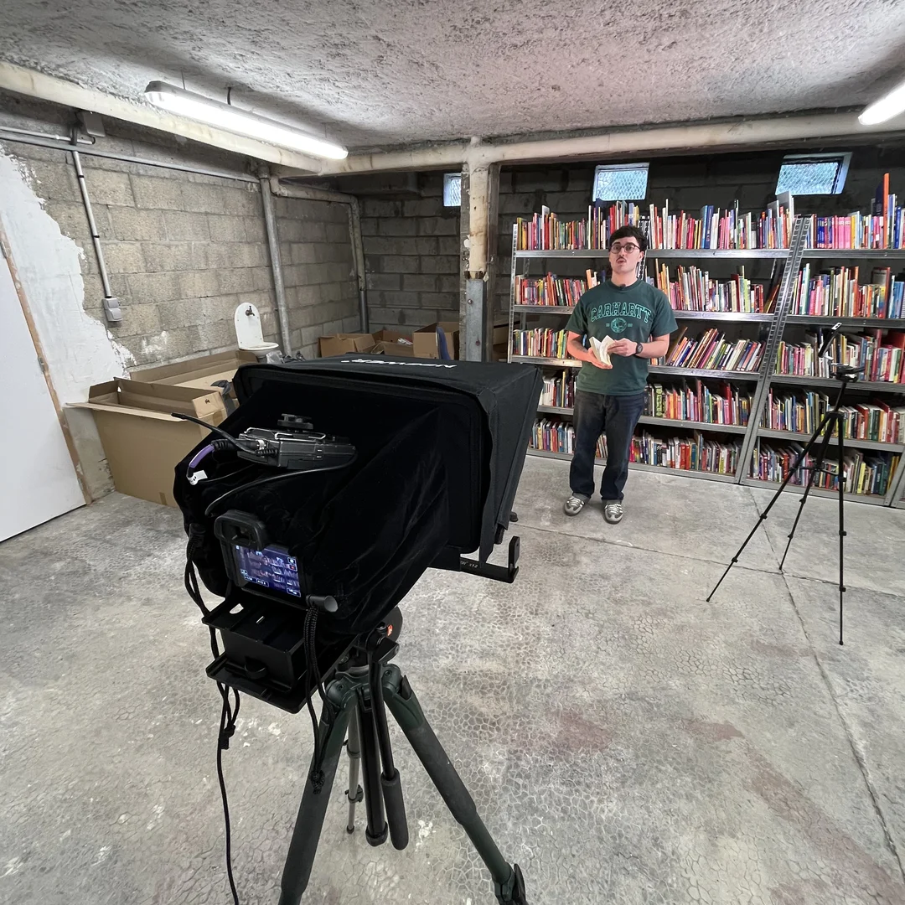

Présentation
Formats verticaux
pour BookiBox.
Dans le cadre de ma deuxième année de BUT MMI, j'ai réalisé un stage de deux mois au sein de BookiBox, une jeune entreprise basée à Aix-en-Provence. Fondée par Samuel, un auto-entrepreneur passionné, BookiBox propose un concept écoresponsable d'abonnements de livres d'occasion pour enfants, reconditionnés et personnalisés selon leurs goûts. L'objectif principal de ma mission était de booster la visibilité de la marque sur les réseaux sociaux. Pour cela, nous avons mis en place une stratégie de contenu dynamique axée sur les formats verticaux (TikTok, Instagram Reels, YouTube Shorts), un levier devenu incontournable pour engager une communauté et promouvoir le circuit court de l'occasion.
Mon rôle
Production audiovisuelle
de A à Z.
Travaillant en totale autonomie et en collaboration directe avec le fondateur, j'ai pris en charge l'ensemble de la chaîne de production audiovisuelle, du benchmark concurrentiel initial jusqu'à la post-production. Après une phase d'écriture des scripts, je me suis pleinement concentré sur mon domaine de prédilection : la réalisation technique. J'ai orchestré les tournages en gérant la captation vidéo, la prise de son de Samuel face caméra, ainsi que la mise en place de l'éclairage pour garantir une esthétique soignée. Au total, ce sont plus de 200 formats courts qui ont été initiés et dérushés durant mon stage. J'ai personnellement assuré le montage complet et la post-production de six de ces formats clés, maximisant leur impact visuel et leur rythme pour les réseaux.
Matériel & outils
Stack technique.
Pour garantir un rendu professionnel, j'ai déployé le matériel technique de l'université combiné aux outils de l'entreprise. Les tournages ont été réalisés avec un boîtier hybride Canon R7, monté sur trépied et associé à un prompteur pour fluidifier le jeu d'acteur. La captation audio a été confiée à un système de micros cravates sans fil Sennheiser, tandis que la gestion de la lumière reposait sur des projecteurs LED nomades Boling. Côté post-production, j'ai structuré mon workflow en combinant la puissance d'Adobe Premiere Pro pour le montage et la colorimétrie, et l'efficacité de CapCut pour l'intégration de sous-titres dynamiques et optimisés pour le format mobile.
